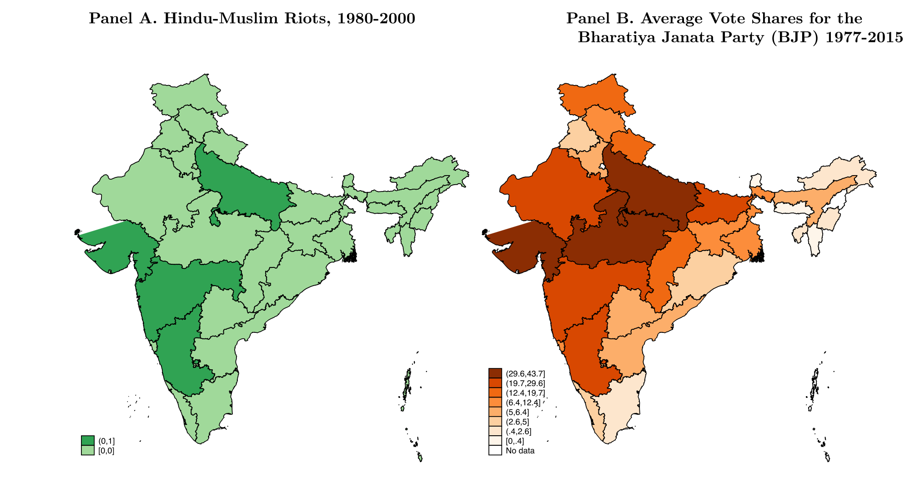
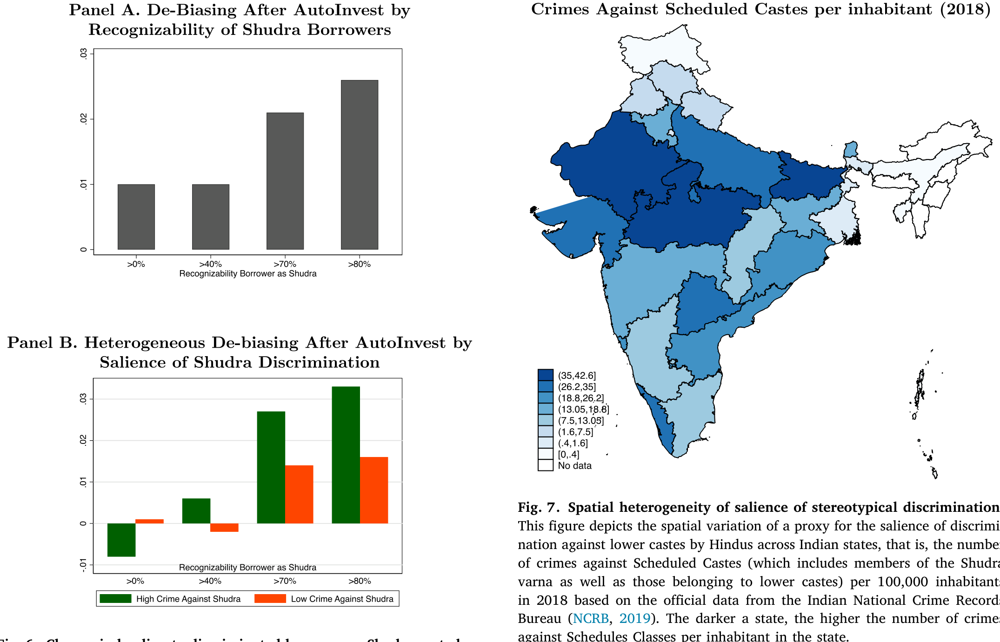
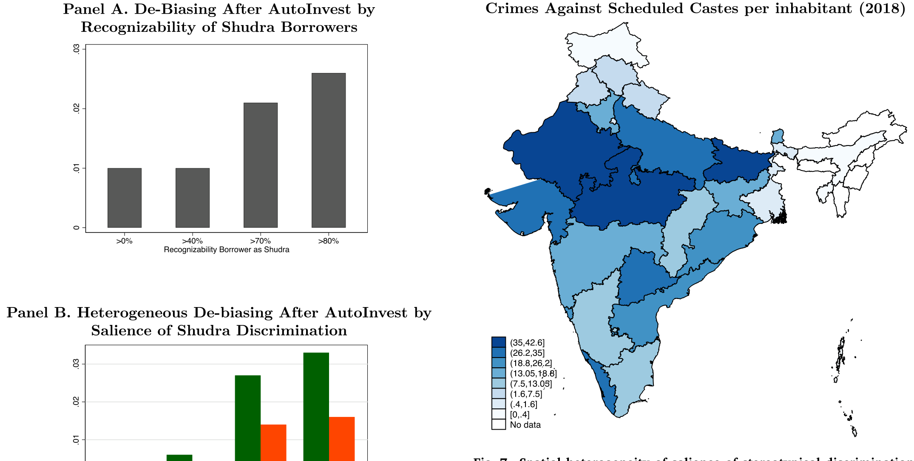
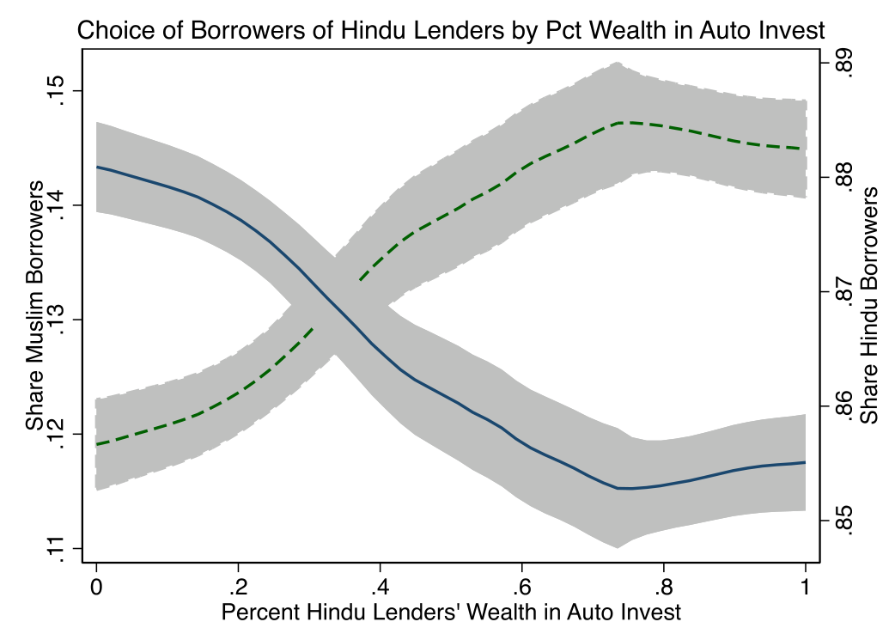
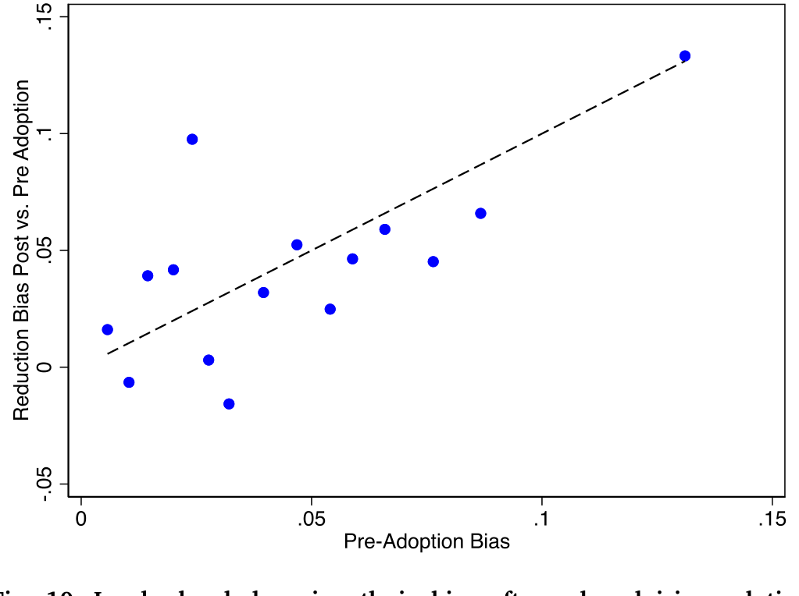
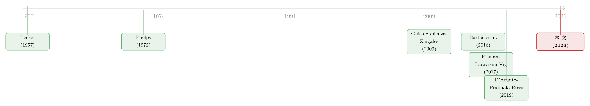

替自己人放贷，为什么反而亏了钱？——文化偏见的代价，与一个机器人的「祛魅」
本文读的是 D'Acunto, Ghosh & Rossi (2026, Journal of Financial Economics)：在印度一个 P2P 借贷平台上，同一批放贷人「单独决策」和「看过机器人投顾的建议之后」分别会把钱借给谁。结论是——当无人辅助时，人们更愿意把钱借给与自己同族同教的借款人，结果违约率高出 8%、回报低了 7.3 个百分点；而机器人投顾几乎不改变分散度，却悄悄削掉了那些「高风险的自己人」。更耐人寻味的是：放贷人几乎从不推翻机器人把钱配给「自己讨厌的群体」的建议——这说明，让他们亏钱的不是「我就是不喜欢你」式的口味歧视，而是关于「自己人更靠谱」的错误信念。
1 一个反直觉的开场
先问一个看似没什么悬念的问题：如果让你去借钱给陌生人，你是更愿意借给「和自己同一个圈子」的人，还是圈子之外的人？
直觉的答案几乎是脱口而出的：当然是自己人。原因听起来都很「理性」——我更了解他们，我更容易判断他们靠不靠谱，万一出了事我也更有办法盯着他们还钱。经济学里给这套直觉起了个体面的名字，叫统计性歧视 (statistical discrimination)：在信息不全的世界里，「属于某个群体」本身就是一条关于质量的信号，照着这条信号办事，能让我做得更好（Phelps, 1972）。沿着这条逻辑，文献里甚至有一个非常漂亮的实证发现：放贷人借钱给与自己「文化更接近」的借款人，违约更少、回报更高（Fisman, Paravisini & Vig, 2017）。文化亲近，是一笔资产。
可是，如果这套直觉是对的，那本文这篇论文就没什么好写的了。
它的结论恰恰相反：在它研究的那个场景里，借钱给「自己人」，平均而言是在亏钱。同族同教的借款人违约更多、回报更低；而且并不是因为利率高到能补偿——回报本身就是低的。一个把钱投在「自己人」身上的放贷人，事后会发现，自己为这份亲近感付出了大约相当于本金 6% 的代价。
于是，真正的问题就从「人们会不会偏向自己人」变成了一个更尖锐的版本：当偏向自己人明明在赔钱时，人们为什么还要这么做？ 是因为「我就是乐意为自己人花这个钱」（一种有意识的、宁可亏也要做的口味歧视 (taste-based discrimination)），还是因为他们压根没意识到自己在亏——脑子里装着一套关于「谁更靠谱」的错误信念？
这篇论文最漂亮的地方，就是它找到了一个能把这两种解释掰开的场景。
2 为什么是 Faircent：一个被「掏空」了所有捷径的实验室
要回答上面的问题，难点不在于「能不能看到歧视」，而在于——一旦看到了同族借贷表现更好或更差，你永远说不清到底是哪条机制在起作用。是因为口味？是因为信息优势？是因为熟人之间更好催债？还是因为抵押品、社会关系、面子……这些channel全都纠缠在一起。
本文的策略，是去找一个把这些「捷径」一条条堵死的场景。它选中的是印度的 P2P 借贷平台 Faircent。这个平台有几个对识别至关重要的特征：
首先，平台只接受用自己的钱放贷的个人。资本的所有者和决策者是同一个人——所以一旦他歧视，亏的就是他自己的真金白银，歧视的代价是可被直接量化的；这也排除了「公司—代理人」式的激励扭曲（不像银行里信贷员替老板放贷那种情形）。
接着，一个自然的问题是：会不会是放贷人比平台更会挑人？平台早就替你把关了——借款人在被放贷人看到之前，已经按信用资质被平台筛过一遍。如果放贷人真有筛选优势，他单干时本该做得更好才对。
然后，还有「催债」和「关系型借贷」这条最顽固的捷径。Faircent 把它也堵死了：90% 的放贷人把钱借给了住在至少 5 个不同邦的借款人，放贷人和借款人从头到尾不发生任何线下接触，贷后的筛查、监督、催收全由平台完成。于是 Fisman et al. (2017, 2020) 里那套「文化亲近→更好监督→更低违约」的故事，在这里根本没有舞台。社会抵押、道德压力、同伴效应、看长相放贷（Duarte, Siegel & Young, 2012）——统统失效。
这一步是全文的「方法论暗线」：作者不是在找一个「歧视很严重」的场景，而是在找一个所有「歧视有道理」的解释都被关掉的场景。剩下能解释同族借贷的，就只有口味，或者错误信念。
但真正关键的一步在于那个机器人。平台提供一个可选的机器人投顾 (robo-advising) 工具，它按借款人到达平台的先后顺序给放贷人推荐匹配对象——不读取任何人口学信息，推荐结果与借款人、放贷人的宗教/种姓都不相关。这一点在数据里看得很清楚：放贷人采用工具后，他们投资组合里穆斯林借款人的占比，在印度教放贷人和穆斯林放贷人之间几乎完全拉平，且正好等于平台借款人总体里的占比。
这就给了作者一台「同一个人、同一池借款人、同样的信息和激励」的对照机器：把一个放贷人单干时的选择，和他看过机器人建议之后的选择放在一起比。两者之间唯一变的，是「有没有一个不带偏见的视角介入」。
3 识别：为什么「riots 在别处、放贷人也在别处」反而是好事
把设计讲清楚之后，先看最生猛的一张原始数据图（论文 Fig. 1，可惜不在可嵌入清单里，这里用文字描述）：单干时，印度教放贷人和穆斯林放贷人都更愿意借给「同宗教」的借款人；一旦用上机器人，两边的占比都朝相反方向移动，最后汇到同一个总体比例上。
这张图里藏着本文识别策略里最聪明的一招。你可能会担心：会不会是某种宏观冲击（比如针对某个宗教群体的骚乱、立法、经济打击）让「所有印度教借款人」或「所有穆斯林借款人」的质量同时变好或变坏？作者的回答是——不可能。因为如果是这种「整体质量冲击」，那印度教放贷人和穆斯林放贷人应当同向地多借给某一群人；而数据里看到的是反向调整：印度教放贷人歧视穆斯林借款人，与此同时穆斯林放贷人歧视印度教借款人。一个对称的、双向的歧视，没法用「某一群人质量变了」来解释。
在多元回归里，作者把识别进一步收紧：用放贷人固定效应把每个人身上不随时间变的东西（受教育程度、金融素养、筛人技巧）全部吸收掉，只比较同一个放贷人前后的选择；再加时间固定效应，挡住工具上线前后的各种时变冲击。
于是反转出现了——也是我个人最欣赏的一处异质性设计。作者去看：哪些放贷人的偏见更重？答案是，那些居住在印度教-穆斯林骚乱更频繁的城市、所在邦煽动教派对立的民族主义政党（BJP）得票率更高、以及在成长期经历过更强教派敌意的放贷人，偏见明显更大。
关键在于：借款人住在别处。前面说了，绝大多数贷款发给的是跨邦借款人。也就是说，决定一笔贷款表现好坏的「借款人质量」，根本不暴露在「放贷人所在地」的那些骚乱和政治情绪里。借款人的还款能力，不会因为放贷人老家闹过骚乱而变差。所以，当我们看到「放贷人所在地敌意越深、歧视越重」时，这个相关性只能来自放贷人脑子里的偏见，而不可能来自借款人真实质量的差异。这是把「文化偏见」和「真实质量差异」分开的一记干净的手术刀。

Figure 4: plots the relevant coefficients when estimating Eq. (1) sep- BJP vote share distribution
4 数据与基准结果：亲近感的账单
数据层面，单位是「一笔贷款决策」，覆盖 Faircent 平台上放贷人在采用机器人投顾前后的放贷选择。作者研究了两种文化偏见：
- 横向歧视（in-group vs. out-group）：印度教 vs. 穆斯林，互相提防、各偏向自己一边（Brass, 2011）。
- 纵向 / 刻板歧视（stereotypical discrimination）：所有人都歧视的那一群——印度低种姓的 Shudra。它的特别之处在于，连 Shudra 自己也歧视 Shudra，受歧视者无处可逃，因为没有任何人偏向他们（Banerjee & Munshi, 2004）。
主要结果直接给量级：
第一，亲近是有账单的。 单干时，放贷人面临的违约率平均高出 8%、回报低了多达 7.3 个百分点。拆开看，借给「自己人」的贷款违约概率高出约 2.4 个百分点（相当于平均违约率的 8%）。而且不是「高息高违约但总回报还行」——out-group 贷款在工具上线前回报本就更高；上线后，in-group 贷款的回报反而提升得更多。把这笔账折算一下，同族 vs. 异族歧视的代价，约等于放贷人在工具上线前投入本金的 6%。
第二，亏损集中在「左尾」。 放贷人单干、搞歧视时，倾向于往自己人的池子里挖得更深，挖出来的是那些高风险的同族借款人——正是这条「左尾」事后表现最差。机器人几乎不碰这条左尾；偶尔碰到，也是不分宗教地随机派发。所以采用工具后回报的改善，主要来自in-group 借款人风险结构的变化，而不是分散度的提升。
第三，种姓维度上是同一个故事。 工具上线前，Shudra 借款人在所有放贷人的组合里都偏少（低于其人口占比）；上线后，借给 Shudra 的份额上升，Shudra 与非 Shudra 之间的违约率、回报趋于收敛。而且，所在邦针对低种姓的犯罪率越高，对 Shudra 的歧视越重——又一次，敌意的「地理浓度」预测了歧视的强度。

Figure 6: Change in lending to discriminated borrowers—Shudra caste bor-

Figure 7: Spatial heterogeneity of salience of stereotypical discrimination
5 口味，还是信念？——用「推翻率」当试金石
到这里，事实已经很清楚：歧视存在、歧视很贵、机器人能治。但本文最想回答的那个问题还悬着：这究竟是口味歧视，还是错误信念？
作者的检验设计简洁得近乎优雅。逻辑是这样的：
- 如果是口味歧视——「我就是不愿意把钱给那群人」——那么当机器人建议你借给一个你讨厌的群体时，你应该会去推翻它。毕竟推翻只需点一下，激励前后完全没变，而你单干时甚至愿意为「不借给他们」承担真金白银的损失。
- 如果是错误信念（不准确的统计性歧视）——你只是真心以为「自己人更靠谱」——那么当一个你信任的工具替你做了匹配，你没什么动力去推翻它。
数据给出的答案是：绝大多数放贷人并不推翻机器人的建议，包括那些把钱配给了他们单干时会歧视的群体的建议。这就把口味歧视基本排除了。Shudra 放贷人也歧视 Shudra 借款人这一事实，又顺手排除了亲缘利他 (kin altruism)——如果是「我乐意帮自己人」，Shudra 不该歧视 Shudra。
所以本文落到的解释是：不准确的统计性歧视——放贷人对不同族群借款人的质量，抱有系统性偏离事实的事前信念。这些错误信念可能来自：用「总体人群」的平均特征去套平台上的借款人（而平台借款人都是有银行账户和信用分的、被筛选过的群体，根本不代表总体）；或者「觉得自己更懂自己人」，于是对自己人用心筛、对外人用刻板印象拍脑袋。
为了把「信念」这条线钉死，作者又做了一个强度边际 (intensive-margin) 的检验。Faircent 上看不到种姓，放贷人只能从姓氏、地点、职业去猜一个人是不是 Shudra，而这些线索的「可识别度」因人而异。作者借用 Bhagavatula et al. (2017, 2018) 训练的算法，为每个借款人算出一个「被认成 Shudra 的概率」。结果是：越容易被认出是 Shudra 的借款人，受到的歧视越重；而对那些种姓难以判断的借款人，歧视几乎消失。歧视的强度，精确地随着「刻板印象能否被触发」而变——这正是信念驱动、而非纯口味的指纹。

Figure 2: reports the results of this intensive-margin analysis in the raw
最后，机器人的「祛魅」效果有多大？在放贷人层面，采用工具后族群偏见出现了实打实的下降（论文 Fig. 10）。这给出了一个有政策意味的推论：机器人投顾或许能成为供给侧干预（如信息披露）和需求侧干预（如金融素养教育）的替代品——因为它不要求当事人「先意识到自己有偏见」就能纠偏。这一点尤其重要：你很难教一个人改掉他根本不知道自己有的毛病。

Figure 10: Lender-level drop in ethnic bias after robo-advising relative
关于「金融素养」这条需求侧路径到底管不管用，本博客此前读过一篇很有意思的文章（参见《一门高中理财课，能让金融犯罪少三成？》）；而关于金融科技如何重塑普惠信贷的印度证据，可参见《一辆共享单车，如何让1亿人「被看见」？》。本文恰好提供了第三条路——不教育、不披露，直接用一个中立的算法替你「绕开」偏见。
6 文献脉络
把这篇论文放回它所在的那条河流里，脉络其实相当清晰。
源头是 Becker (1957) 的歧视经济学，他把歧视刻画成一种「口味」——歧视者宁愿付出代价也要远离自己讨厌的群体。紧接着 Phelps (1972) 提出了统计性歧视：在信息不全时，群体身份是一条关于质量的理性信号，照此行事甚至能改善决策。这两条——「口味」与「信号」——构成了后续半个世纪所有讨论的两极。
中段，Guiso, Sapienza & Zingales (2006, 2009) 把「文化」正式请进经济学，论证文化会系统性地塑造信念与经济行为，并造出「文化偏见」这个概念。与此并行，Bartoš et al. (2016) 提出了注意力歧视——人们对内群体投入更多筛选注意力。在借贷领域，Fisman, Paravisini & Vig (2017) 与 Fisman et al. (2020) 给出了那个著名的「正向」结果：文化亲近→更好的贷款表现。
然后，D'Acunto, Prabhala & Rossi (2019) 等开启了机器人投顾这条新线，研究算法如何改变金融决策。

本文的位置就在这两条线的交汇处：它借机器人投顾当「手术工具」，去切开文化偏见的内部结构。它的贡献不在于「又发现了一种歧视」，而在于证明了——在一个把所有「歧视有道理」的channel都关掉的场景里，歧视的代价是负的，而且根源是错误信念而非口味。这恰好与 Fisman et al. 的正向结果形成镜像：不是他们错了或本文错了，而是当监督、关系这些channel在与不在时，文化亲近的符号会反转。
7 评论与延伸（Q&A + 研究方向）
(a) 几个可能的疑问
Q：这和 Fisman et al. (2017) 的「文化亲近降低违约」到底矛不矛盾？
不矛盾，反而是互补的。两者的差别在场景。Fisman 的银行场景里，同族意味着更强的监督和催债能力，所以亲近是资产；本文的 Faircent 场景里，放贷人和借款人从不接触、催收全归平台，监督channel被关死，于是只剩下「错误信念」在起作用，亲近就变成了负债。同一个符号在不同制度下反号——这本身就是本文最有意思的洞见。
Q：怎么确定机器人投顾真的「中立」、没有偷偷植入歧视？
作者给了一个很硬的间接证据：采用工具后，印度教放贷人和穆斯林放贷人组合里的穆斯林借款人占比完全拉平，且等于平台借款人总体占比。如果机器人带偏见，这个占比不会在两群放贷人之间趋同。机器人只按「到达顺序」推荐，与人口学不相关。
Q：会不会是采用工具的放贷人本来就和不采用的人不一样（选择性采用）？
这正是放贷人固定效应要解决的问题。识别建立在同一个放贷人前后对比上，把「什么样的人会采用工具」这种不随时间变的差异整个吸收掉了。当然，「同一个人在采用前后是否还有别的时变变化」仍是潜在担忧，作者用时间固定效应来缓解。
Q：「8% 更高违约」和「6% 的本金代价」是同一回事吗？
不是。
8%是相对违约率的提升（in-group 贷款违约概率高约2.4个百分点，约为平均违约率的8%）；6%是把违约和回报损失折算后，歧视给放贷人造成的、相当于其投入本金的整体福利代价。前者是「事件概率」，后者是「钱包损失」。
Q：为什么用 Shudra 而不是 Dalit（贱民）来研究种姓歧视？
因为平台上 Dalit / 表列种姓借款人只占
0.1%，样本太小没法检验。Shudra 既有足够样本，又满足「人人都歧视、连自己人也歧视」的纵向歧视特征，还能借「可识别度」做强度边际检验。
Q：「不推翻机器人建议」能多大程度上排除口味歧视？
这是本文最关键的逻辑支点，也值得保留一点怀疑。它的前提是「推翻成本极低」。如果存在别的摩擦（惰性、对工具的过度信任、默认选项效应），那么「不推翻」也可能掩盖了被压住的口味。作者用 Shudra 歧视 Shudra 来补强（排除亲缘利他），但「默认效应 vs. 信念」的边界，严格说仍有讨论空间。
(b) 几个可能的研究问题与提案
1. 把这套「机器人祛魅」搬到公司债 / 信用市场
【经济故事】机构投资者在配置公司债时，是否也对「本土发行人 / 同语言区发行人」抱有错误信念，从而系统性错配信用风险？如果有，引入中立的算法化筛选是否能改善组合的事后违约-回报权衡？ 【可行性】中。可用 TRACE 成交 + Mergent FISD 发行人特征 + 机构持仓（如 eMAXX / 13F 衍生）。难点在于缺少 Faircent 那样「同一决策者前后对照」的清洁实验，识别需要找一个外生的「算法采用」冲击（如某资管平台上线信用打分工具的时点）。
2. 外资持有人与「文化亲近」的债券定价
【经济故事】外资债券投资人是否偏好「文化/语言更近」的发行国或发行人，并因此承担更差的事后表现？本文逻辑预测：在没有本地监督优势的跨境场景里，文化亲近应当是负债而非资产。 【可行性】中高。可用跨境债券持仓（如 ECB SHS、IMF CPIS）配发行人违约/利差数据，按投资国-发行国的文化距离（语言、宗教、殖民史）做异质性。识别可借助指数纳入或评级变动等外生冲击。这与本博客读过的若干外资/流动性主题天然衔接。
3. 错误信念的「半衰期」：祛魅效果能持续多久？
【经济故事】机器人纠正的是信念还是行为？如果是信念，放贷人应当在停用工具后也表现得更好（学会了）；如果只是行为约束，一旦工具撤掉，偏见立刻反弹。 【可行性】高（若数据允许）。在 Faircent 同一数据里，找那些「采用后又停用」的放贷人，看其偏见是否回弹。直接、干净、几乎不需要新数据。
4. 「可识别度」作为连续工具变量的推广
【经济故事】本文用「被认成 Shudra 的概率」做强度边际，是一个被低估的好工具。能否把它推广到信用市场——比如发行人「本地属性的可识别度」——来分离「基于身份的信念」与「基于硬信息的定价」？ 【可行性】中。需要训练一个「身份可识别度」的预测模型，对数据要求高，但思路 doable，且方法论上有新意。
8 参考文献与我的判断
我的总体判断是：这是一篇方法论上极其干净、问题极其聚焦的论文。 它最大的贡献不是「测出了歧视的代价」（6% 本金、7.3pp 回报这些数字固然漂亮），而是它用「机器人是否被推翻」这一个行为变量，把困扰歧视文献几十年的「口味 vs. 信念」之争，在一个真实高额的场景里给出了相当有说服力的答案：至少在这里，让人亏钱的是错误信念，而不是恶意。 这对政策的含义是乐观的——你不必先说服一个人承认自己有偏见，就能用一个中立工具帮他绕过它。
要说对识别的担忧，我有两点。其一，全文最关键的推断（排除口味歧视）压在「推翻成本可忽略」这个假设上；现实中默认效应、对算法的信任、纯粹的惰性都可能伪装成「信念」，我会想看到对「不推翻」更细的拆解（比如那些明确浏览了又选择不改的人）。其二，Faircent 的借款人是「有银行账户和信用分」的被筛选群体，外推到更广的信用市场（尤其是无征信人群）时要小心——那里「自己人信号」的信息含量可能完全不同。
后续我最想看到的，是「祛魅效果的持久性」：机器人到底教会了人，还是只是替人按住了手？如果撤掉工具偏见立刻反弹，那它就只是一根拐杖而非一剂药——这对所有寄望于「算法治理偏见」的政策设计，都是一个绕不开的拷问。
参考文献
- Becker, G. (1957). The Economics of Discrimination. University of Chicago Press.
- Phelps, E.S. (1972). The Statistical Theory of Racism and Sexism. American Economic Review.
- Borjas, G.J. & Goldberg, M.S. (1978). Biased Screening and Discrimination in the Labor Market. American Economic Review 68(5), 918–922.
- Banerjee, A. & Munshi, K. (2004). How Efficiently Is Capital Allocated? Evidence from the Knitted Garment Industry in Tirupur. Review of Economic Studies 71(1), 19–42.
- Guiso, L., Sapienza, P. & Zingales, L. (2006). Does Culture Affect Economic Outcomes? Journal of Economic Perspectives 20(2), 23–48.
- Guiso, L., Sapienza, P. & Zingales, L. (2009). Cultural Biases in Economic Exchange? Quarterly Journal of Economics 124(3), 1095–1131.
- Brass, P.R. (2011). The Production of Hindu-Muslim Violence in Contemporary India. University of Washington Press.
- Bartoš, V., Bauer, M., Chytilová, J. & Matějka, F. (2016). Attention Discrimination: Theory and Field Experiments with Monitoring Information Acquisition. American Economic Review 106(6), 1437–1475.
- Fisman, R., Paravisini, D. & Vig, V. (2017). Cultural Proximity and Loan Outcomes. American Economic Review 107(2), 457–492.
- Bhagavatula, S., Bhalla, M., Goel, M. & Vissa, B. (2017). The Business of Religion and Caste in India. Working Paper.
- D'Acunto, F., Prabhala, N. & Rossi, A.G. (2019). The Promises and Pitfalls of Robo-Advising. Review of Financial Studies 32(5), 1983–2020.
- Fisman, R., Sarkar, A., Skrastins, J. & Vig, V. (2020). Experience of Communal Conflicts and Intergroup Lending. Journal of Political Economy 128(9), 3346–3375.
- Duarte, J., Siegel, S. & Young, L. (2012). Trust and Credit: The Role of Appearance in Peer-to-Peer Lending. Review of Financial Studies 25(8), 2455–2484.